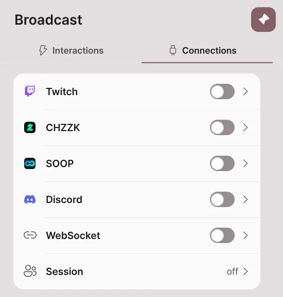
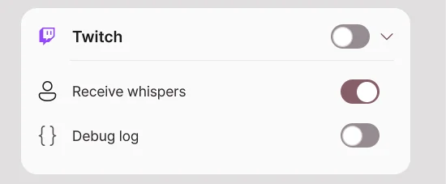
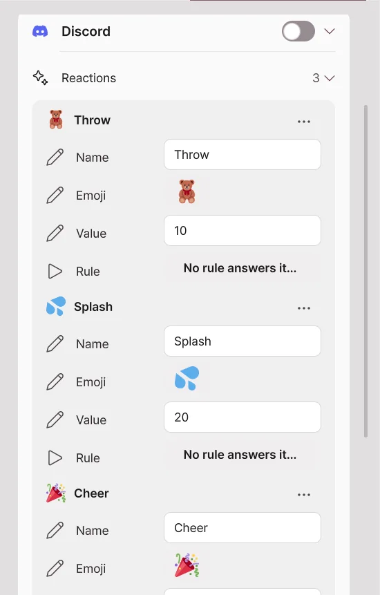
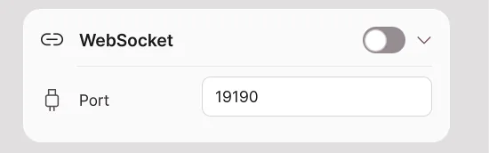

Broadcast
New in 2.2.0; not available in 2.1.2 or earlier.
Receive Twitch, CHZZK and SOOP viewer events and reactions from Discord friends, and make the avatar react to them. Broadcast integration is a Pro feature and is currently in beta. If something goes wrong on a real broadcast, let us know with an error report.
The Broadcast page has two tabs.
| Tab | What it does |
|---|---|
| Interactions | Sets what happens when an event arrives. It has Simple setup, the Node editor, and Falling, Donation display and Test. |
| Connections | Connects platform accounts and Discord channels, and opens the WebSocket and the remote collaboration session. |

Connections
Connecting Twitch, CHZZK and SOOP
- Open Broadcast → Connections.
- Turn on the switch of the platform you want to connect.
- On the platform login page that opens in your browser, log in with your streaming account and allow the permissions.
- When the card shows Connected, it is ready to receive events.

| Platform | Events you can receive |
|---|---|
| Twitch | Channel points redeemed, chat, follows, subscriptions (including gifts and subscription messages), bits, raids, hype trains, whispers |
| CHZZK | Chat, donations (chat donations and video donations), subscriptions |
| SOOP | Chat, star balloons, ad balloons, video balloons, stickers, subscriptions, gifts |
Turn the switch off to stop receiving events. Your saved login and rules are not deleted. Turn on Debug log to record the received events in detail in the diagnostic log.
The Twitch, CHZZK and SOOP login connects through the Avatar Live server. Your login information is saved only on your own PC; nothing is kept on the server.
Connecting Discord
Friends who are not watching the stream can also move the avatar from a Discord channel with buttons or the /react command. It works only while the Avatar Live app is running.

1. Add the Discord app
Open Add the Avatar Live Discord app and choose where to add it. The app asks only for the commands (applications.commands) permission. It does not read messages or manage servers.
| Where to add | When to use |
|---|---|
| Add to server | Use it in a channel of your Discord server. You need permission to manage the server. Your friends do not install anything. |
| Add to my account | Use it when you have no server, or in a group DM. To type the commands themselves in a group DM, friends must also add the app to their own account. Friends who did not install it press the buttons you posted. |
2. Link a channel
- In the app, turn on the switch in Broadcast → Connections → Discord.
- Press Make a connect code. An 8-character code is shown for 10 minutes.
- In the Discord channel you want to link, choose the
/linkcommand, put the code in the code field and send it. - When the app shows a window asking whether to connect the channel, check the server and channel names and press Connect.
- The channel appears in Linked channels.
A code can be used only once. A channel someone else has already linked cannot be linked.
3. Post reaction buttons
- Send
/panelin the linked channel. The reactions in the Reactions list are posted as buttons. - When a friend presses a button or chooses a reaction with
/react, the rule that handles that reaction runs. - The Discord message shows who did what.
In the Reactions list, set the name, emoji, value and rule for each button. The value is the number that the rule's minimum and maximum count conditions look at. Press Rule to cycle through the rules; the Discord reaction trigger of the chosen rule is turned on.
Discord commands
| Command | Who | What it does |
|---|---|---|
/link code: |
You | Links this channel to your Avatar Live. |
/unlink |
You or a server admin | Unlinks this channel. |
/panel |
You or a server admin | Posts the reaction buttons. Works in group DMs too. |
/react |
Friends | Picks one reaction. If none is chosen, it is the first reaction. |
/points /daily /gift /rank |
Friends | Check, collect and share points for the point games. |
/roulette /slots /highlow /blackjack /duel /predict /lottery /race /quiz /boss |
Friends | Mini-games of the point games. |
When the Discord client language is Korean, Japanese or Chinese, Discord shows the commands under localized names such as /연결, /接続 or /连接.
Set the point games' rules and point values in Point games on the Discord card. Points are saved on this PC for each channel.
The developer's server relays between Discord and the app. Your friends' Discord names and profile pictures are passed to your app and used for display and stickers. The app never posts to Discord on its own; it only answers your friends' commands.
WebSocket

Lets other programs on this PC exchange events with Avatar Live. It is off by default, and the port is 19190. Only programs on the same PC can connect, at ws://127.0.0.1:port. Handle what is exchanged with the WebSocket nodes in the Node editor.
Remote collaboration
Bring avatars moving on different PCs together into a single studio scene. Every participant needs Pro and the same Avatar Live version supporting remote sessions.
Open the session card at the bottom of Broadcast → Connections. One person hosts a room; everyone else joins using the host's address.
Host: open a room

- Expand Open server.
- Set your name, a password and the maximum number of people.
- Enable the Server switch.
- Give participants the connection address and password.
| Setting | What it controls |
|---|---|
| Port | Connection port, 47700 by default. |
| Maximum people | Participant limit, including the host. |
| Password | Password required to join. |
| Server switch | Opens or closes the room; closing it disconnects participants. |
| My address | Host PC's local address. Give friends outside your home the public address and port instead. |
If others cannot join, see Troubleshooting connections.
Participant: join a room
- Expand Join.
- Enter the address:port given by the host.
- Enter your name and the password.
- Enable the Connect switch. The first time you enter, read the entry notice that appears and agree to it once.
- Confirm that participant names appear in the list.
Turn off Connect to leave.
Avatar display and placement

| Setting | What happens when you change it |
|---|---|
| Share data with the session | One switch to exchange avatar data with session participants; off by default. |
| Individual settings | Expand to set Show the others' avatars and Send my avatar separately. |
| Substitute avatar | Selects a local model to show if the original cannot be used. |
| Layout sync | Applies the host's placements plus individual position adjustments. |
| Lock placements | The host restricts participant changes to position, rotation and scale. |
| Position, rotation, scale | Adjusts the selected participant's placement. |
| Find again | Searches your local folders for an identical VRM that you already own. |
A placement you set for another participant may affect only your own view. Use layout sync when several people need a matching arrangement.
Before sending your avatar
The original creators' terms determine whether you may transmit an avatar, clothing or props. Buying Pro or encrypting the data does not give permission to share copyrighted assets. VRM models whose redistribution is prohibited are not transmitted.
If transfer is not permitted, leave Send my avatar data off and select a substitute avatar. See Content usage and ownership.
Troubleshooting connections
First check that the host's server is on, the address, port and password are correct, and everyone uses the same compatible version.
A friend in another home cannot join — port forwarding
On the host's router, forward incoming connections to the host PC.
- Find the host PC's IPv4 address.
- Open the router's Port Forwarding / Port Mapping settings.
- Create the following rule:
| Setting | Value |
|---|---|
| Internal IP | Host PC's IPv4 address |
| External port | 47700 |
| Internal port | 47700 |
| Protocol | Both TCP and UDP |
If you changed the port in Avatar Live, change both port values accordingly. People outside the home connect using the host router's public IP address and port. Private addresses beginning with 192.168 cannot be reached directly from another home.
The address and port are correct but there is no response — firewall
Allow Avatar Live through the host PC's Windows firewall. If manually creating rules, permit inbound TCP and UDP for the session port. You do not need to disable the entire firewall.
If the host PC's internal IP changes, update the router's forwarding target too. A DHCP address reservation can prevent that address from changing.
Port forwarding and the firewall look correct — router or ISP
If the router's WAN address is private or your ISP uses CGNAT, forwarding on your own router may not enable outside connections. Check the upstream router or ask the ISP about public IP availability.
Testing the public address from the same Wi-Fi can fail if the router lacks NAT loopback. Test with a participant on a different network.
Session data notice
- One participant's PC acts as the room server. Avatar Live does not store session avatars on a central service.
- Avatar data transferred with consent uses AES-256-GCM encryption and is temporarily cached on the host and receiving PCs for that session.
- When a participant leaves or the session ends, the app deletes temporary caches and discards decryption keys.
- An encrypted cache alone does not allow reconstruction or export of the original avatar asset.
- Live pose, expression and control messages travel separately from avatar-file transfer and do not have the same end-to-end encryption.
- Encryption of transferred files does not grant redistribution rights for avatars, clothes or props.
Interactions
Simple setup
Simple setup is a list where each line says "when this event arrives, react like this". For example, throw an object when someone follows, and pour water on the avatar for a donation of 10,000 won or more. It is a broadcast integration feature, so it needs Pro, and it is currently in beta.
Make items on the Simple setup card in Broadcast → Interactions.

| What a row shows | Meaning |
|---|---|
| Platform icon | The platform this item receives events from. |
| Name | The item's name. At first it is named like "Rule 1". |
| Trigger → Action | A summary of which event does what. |
| ▶ | Sends one made-up event to test it right away. |
| ⋯ | The Rename, Duplicate, Turn on/Turn off and Delete menu. Right-clicking the row opens it too. |
| Switch | Turns the item on and off. |
Making a new item
- Press + on the Simple setup card.
- In the Platform step, turn on the platforms to receive events from. You can turn on several together.
- Press Next.
- In the Connect step, check that you are logged in to those platforms. If not, connect with the login button.
- In the Throw, Sticker and Liquid steps, choose which events run each of them. A step with no event chosen is not made.
- Press Make to add the item to the list.


Fields left empty are filled with the default objects, sounds, effects and sticker folder, so the item works right away. Change the details later by expanding the item.
Examples
| What you want | Trigger | Action |
|---|---|---|
| Throw an object on a follow | Twitch Follow | Throw |
| Pour water for a donation of 10,000 won or more | CHZZK donation, minimum amount 10000 | Liquid |
| Pour water for 100 or more star balloons | SOOP star balloon, minimum count 100 | Liquid |
| Throw on a Discord friend's reaction | Discord reaction | Throw |
| Change the lights with channel points | Twitch Reward, reward title | Light |
The action settings of the examples are explained in detail in Throw, Liquid and Falling.
Expanding an item
Press the arrow on the right of a row to expand the item.

Triggers
Triggers are grouped by platform. Add a trigger with + next to a platform. One item can hold triggers from several platforms together.
| Trigger | Condition |
|---|---|
| Reward (Twitch) | A channel points reward with the same reward title |
| Chat | Text the message must contain |
| Bits, donations, star balloons | Minimum and maximum amount or count |
| Subscribe | New, continued and gift subscriptions |
| Discord reaction | The reaction to handle, minimum and maximum count |
| Discord mini-game result | The game, Only a jackpot, at least this many points back |
Expand Test values to set the nickname, amount and message that the ▶ test sends.
Actions

| Action | What it does |
|---|---|
| Quick Action | Runs one quick action. |
| One-shot | Plays a one-shot animation once. |
| Throw | Throws props at the avatar. The count can grow with the donation amount. |
| Liquid | Pours a liquid such as water or milk. |
| Sticker | Sticks a picture on the avatar. It can also use the viewer's profile picture. |
| Light | Briefly turns a light on or off, or changes its color, brightness, effect or preset, then goes back after the set time. |
| Avatar | Turns tracking off, loops a dance, or puts a pose on for a while. |
These are the avatar reactions that Simple setup items and the Node editor run. They work with any avatar and any camera. They are broadcast integration features, so they need Pro, and they are currently in beta.
Throw
Throws objects from the props library at the avatar. When hit, the avatar is pushed while standing and then comes back.
| Setting | What it does |
|---|---|
| Object | Choose the objects to throw by thumbnail, category or search. If you choose several, one of them is thrown at random each time. |
| From | Where the object flies in from: Off screen, Edge, Above head or Face front. |
| To | Aims at Anywhere on body, or at a body part such as the head, chest or hands. |
| Speed, Weight, Size | How fast and how hard it hits, and the object's size. |
| Count | How many are thrown at once, and the interval. Turn on By amount to add more objects for each donation amount. |
| Sound | Sounds on launch and on hit. You can add your own sound files too. |
| Effect | Plays an Impact, Sparkle, Stars, Dust, Hearts, Drops or Confetti effect on hit. |
| Expression when hit | The expression the avatar makes while being hit. |
| More | Sets gravity, spin, how long it stays, Vanish on hit and Stick on hit. |
Liquid

Choose a liquid (water, juice, milk, honey, slime, ink or gold) and pour it on the avatar. The liquid runs down the body from where it hits, and the avatar looks wet for a while and then dries.
| Setting | What it does |
|---|---|
| From, To | Where the liquid comes from and where it aims. It can also pour from in front of the face. |
| Speed, Amount | How hard and how much it pours. |
| Stop by itself, Stop after | Stops after the set time. When off, it keeps flowing until the rule or the link is switched off. |
| Thickness | 0 flows like water, 1 flows like syrup. |
| Sound | The default "Splat" splashes at the first hit over the sound of pouring and flowing. Choose another sound and it repeats while the liquid pours; choose none and it is silent. With the default "Splat · random" still on beside another sound, one of them plays at random, so turn the default off to hear only yours. |
| Look and flow | Look values such as color, glow, reflection and surface tension. A PC that cannot run the fluid draws simple drops. |
| Wet look | How the places the liquid touched look wet, and the time to dry. It is the same for every liquid, and by default it dries after 30 seconds. |
Sticker
Sticks your own picture files or folders (one of them at random), online pictures, or animated GIF, APNG and WebP on the avatar. Choose the viewer's picture to fetch and stick the profile picture of the viewer who sent the event.
Light

Turns one light on, off or to the opposite, or briefly applies a color, brightness, effect or preset. After the hold time, your own lighting comes back. The hold time is at least 1 second.
Cooldown and per-viewer limit
| Item | What it does |
|---|---|
| Cooldown (s) | How long to wait after one run before the next run. |
| Per viewer | Applies the cooldown separately to each viewer's events. |
| Delete this rule | Deletes the item. |
| Open in the node editor… | Opens the graph this item made in the Node editor. |
Testing and checking problems
- Press ▶ to test the item without a broadcast.
- If it does not react to real events, check the platform connection, the item switch, the cooldown and the minimum amount in turn.
- If it still does not work, see When broadcast integration does not work and send an error report.
Falling and getting up

When the avatar is hit hard or a knock-down action arrives, it falls to the floor and slowly gets up. Set it in Broadcast → Interactions → Falling and getting up.
| Setting | What it does |
|---|---|
| Fall strength | How hard the avatar is pushed back as it falls. At 0 it collapses right where it stood. |
| Time lying down | How long it lies down before getting up. When a node knocks it down, the node's wait time is used. |
| Getting up time | How long it takes to get up from the floor to its original pose. At 0 it gets up at once. |
For an avatar that cannot fall, the test shows "This avatar cannot fall".
Donation display

Shows donors' names and messages as cards in a box inside the scene. It is off by default.
| Setting | What it does |
|---|---|
| Place | Move and resize the box like an object in the scene. |
| Card | Choose what to show: badge, nickname, message and amount. |
| Events | The events to show: CHZZK donations, Twitch bits, subscriptions and channel points. |
| Stack | Number of cards, display time, message length and minimum amount. |
| Colors by amount | Changes the card color for each amount range. |
| Test card | Enter a nickname, message and amount to add one card as a try. |
Node editor
Connect nodes with lines to build "when this event arrives, under this condition, do this" yourself. Use it when Simple setup is not enough. Editing and running need Pro; on Basic you can only view, pan and zoom. It is a broadcast integration feature, so it is currently in beta.
How is it different from Simple setup?
| Simple setup | Node editor | |
|---|---|---|
| How you make it | Choose triggers and actions from a list. | Drag nodes in and connect them with lines. |
| What it can do | Set reactions such as throw, liquid, sticker, light and avatar actions | About 400 built-in nodes: math, variables, branches, loops, camera, lights, expressions, blend shapes, bones, keyboard, mouse, WebSocket and more |
| Good for | One reaction to one event | Mixing several conditions, or chaining reactions in order |
Simple setup items also run as graphs inside. Expand an item and press Open in the node editor… to see the graph that item made.
Opening the editor
- Open Broadcast → Interactions.
- Press Open node editor on the Node editor card.
- The editor window opens inside the app. Drag the title to move it, and drag the edges to resize it. Use the buttons at the top right to enlarge or close it.
The graphs stay and keep running after you close it.

| Where | What it does |
|---|---|
| Book icon at the top left | Shows or hides the graph list. |
| Choose a graph | Chooses the graph to edit. The eye icon turns a graph on and off. |
| Grid icon at the top right | Shows or hides the node list. |
| Buttons under the graph list | Add, delete, duplicate and rename graphs, make groups, and the ⋯ menu (Format layout, import and export). |
| Node list | Nodes by category. Search with Ctrl+K, and star a node to add it to Favorites. |
| Minimap | Shows the whole graph at the bottom right; click to go to that spot. |
| Undo, redo | Ctrl+Z, Ctrl+Y |
A new graph is made switched off. When it is finished, turn it on with the eye icon so it runs.
Nodes and links
- Drag a node from the node list onto the canvas to add it.
- Drag from a node's right dot (output) to another node's left dot (input) to connect them.
- Flow links (green lines) set the order things run in. They go from EXIT to ENTER.
- Value links (gray lines) pass values such as an amount or a name.
- Flow links and value links cannot be connected to each other. If you drop a link where it cannot go, the reason is shown.
- Right-click a node for the Delete, Duplicate and Disconnect all menu.
- For an input with no link, type the value directly in the field inside the node.
Example: pour water for a donation of 10,000 won or more

- Make a new graph with + in the graph list.
- From the CHZZK category in the node list, drag in CHZZK donation. When a donation arrives, the flow goes out of EXIT and the node outputs Amount (won) as a value.
- From the Math and text category, add Integer: A ≥ B, and connect the donation node's Amount (won) to A. Enter 10000 in B.
- From the Control flow category, add If. Connect the donation node's EXIT to its ENTER, and the comparison node's result to its condition.
- From the Interactions category, add Pour liquid, and connect If true of the If node to its ENTER.
- Turn the graph on with the eye icon.
- Enter 15000 in the donation node's Test amount and press Test to see that water is poured. Change it to 5000 and test again; it should not pour.
Every event node has test fields and a Test button, so you can try it without a broadcast. When the graph is off, tests do not run either.
When you edit a Simple setup item in the node editor
- The item is marked "Edited in the node editor", and it no longer makes the graph again. From then on, the graph decides what happens.
- Press Back to Simple setup in the item's menu to make the graph again from the item's settings. What you changed in the node editor is lost.
- If the nodes of an automatically made graph overlap, press Format layout in the ⋯ menu.
Sharing graphs
Use Export to clipboard in the ⋯ menu to copy a graph as text, and Import from clipboard or Import from file… to load one. Imported graphs come in switched off. Check the contents of a graph someone else gave you before you turn it on.
Test

On the Test card at the bottom of Broadcast → Interactions, try reactions right away with no rule or event. One button runs one reaction once.
| Button | What it does |
|---|---|
| Throw | Throws objects with the aim, strength and count you set. With no object chosen, a random one from the library is used. |
| Knock down | Knocks the avatar down. |
| Hit | Shows the reaction when the chosen part is hit, once. Turn on Throw a small object to have an object fly in too. |
| Pour liquid | Pours with the amount and direction you set (At the face, From above, From the left, From the right). |
| Sticker | Sticks one of your pictures at random. |
| Reset | Removes the objects, liquid and stickers in the scene and puts the avatar back in its original pose. |
Basic and Pro
| Feature | Basic | Pro |
|---|---|---|
| View the Broadcast page | Yes | Yes |
| Platform, Discord and WebSocket connections | Locked | Yes |
| Simple setup, Donation display, Test | Locked | Yes |
| Node editor | View, pan and zoom only | Edit and run |
Even on Basic, your saved logins, rules and graphs are not deleted; they stay, locked.